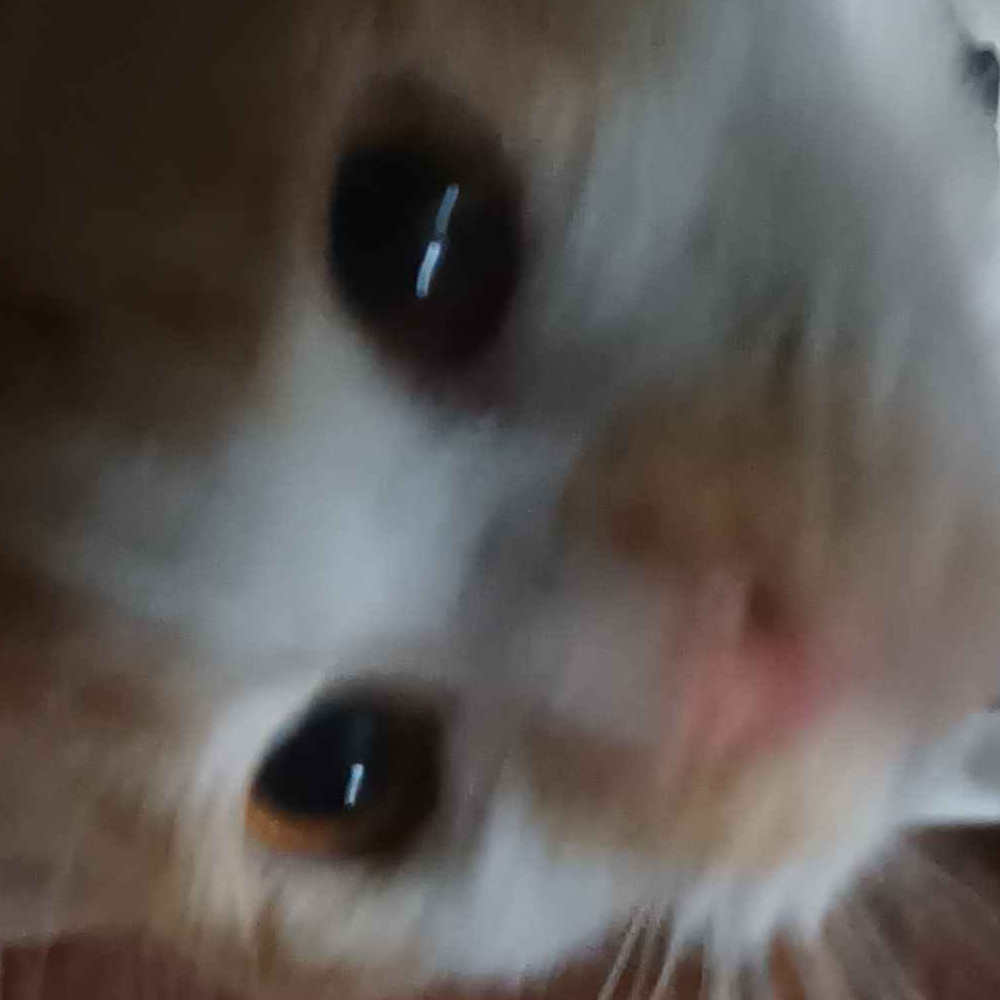
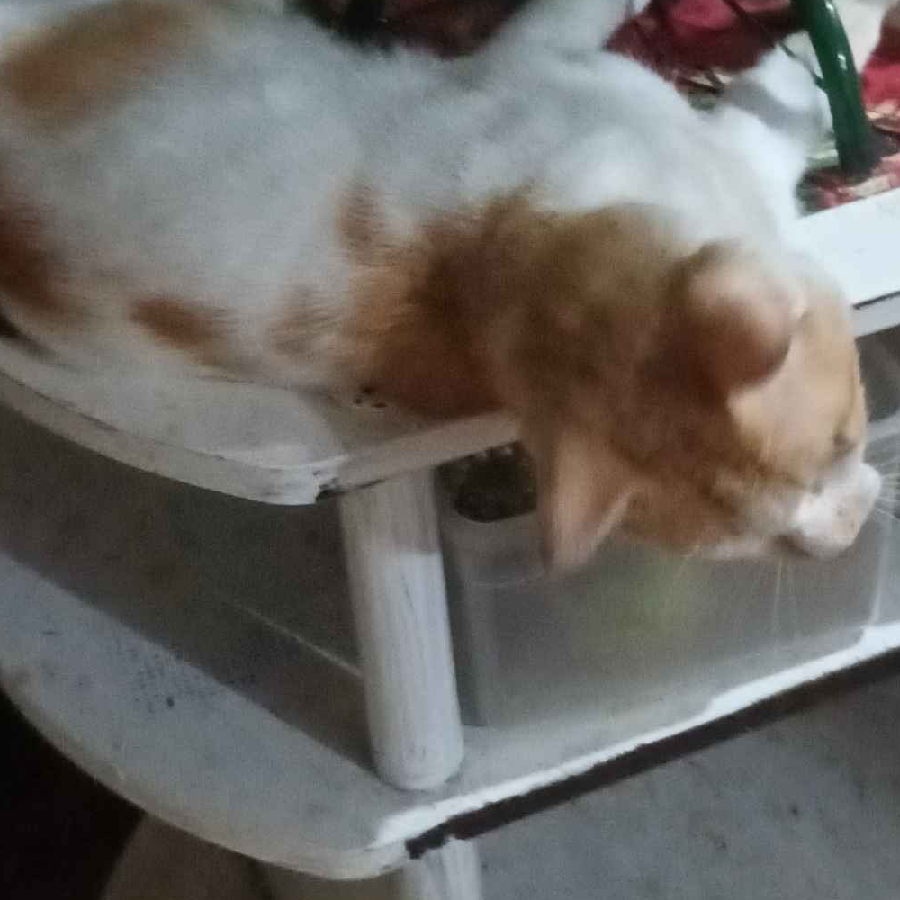
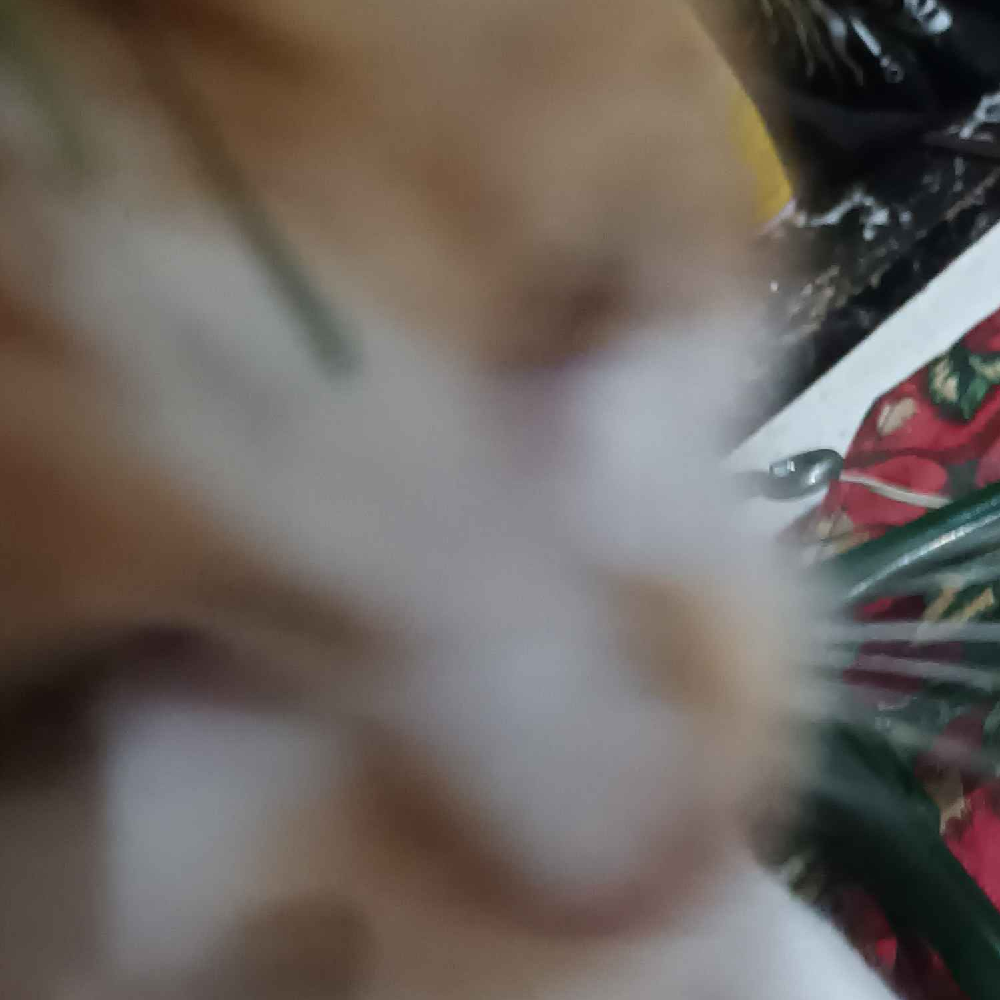
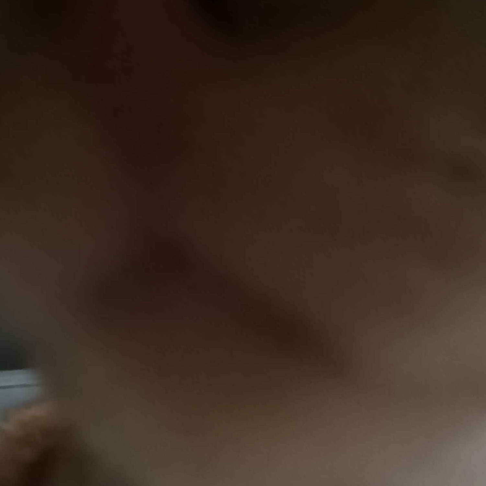

Feliz S. Baja

My name is Feliz "Theo" S. Baja (Preferably called "Theo"). 18 years old and a student attending CIIT Senior High School, currently a programming student (´◡`) I previously attended Colegio de San Lorenzo, Acelina School Inc. Montessori, and APEC Dasmariñas. I like fashion, doodling, and self-expression. I have experience with editing videos.
Achievements:
Grade 4 - Colegio De San Lorenzo - Class Top 2.5
Grade 8 - Acelina School Inc. Concern for People
Grade 8 - Acelina School Inc. Exemplary Professionalism
Grade 8 - Acelina School Inc. Academic Recognition - With Honors
welcome to my website!
Personal interests include journaling, writing, editing, and sleeping. I consider myself to have an eye for aesthetic. I also like fishes and cats. If I cannot become an accountant someday, hopefully I will become a successful fisherman.
Kitty collage below.
 
 